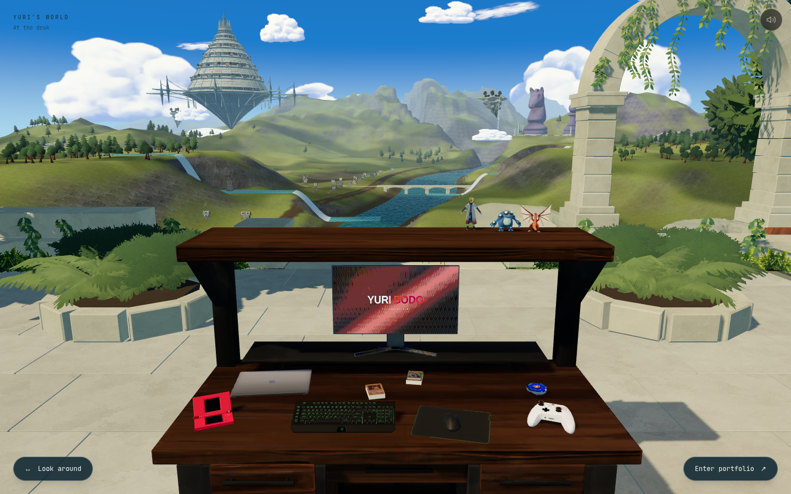
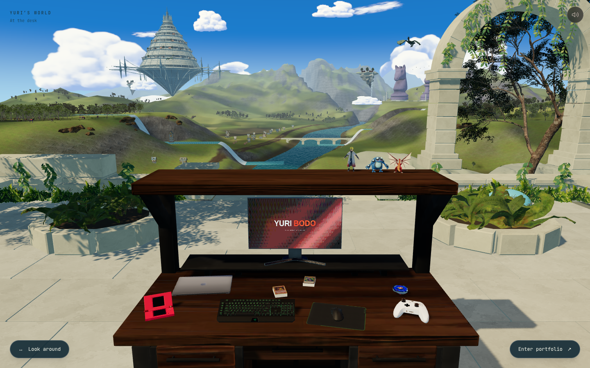
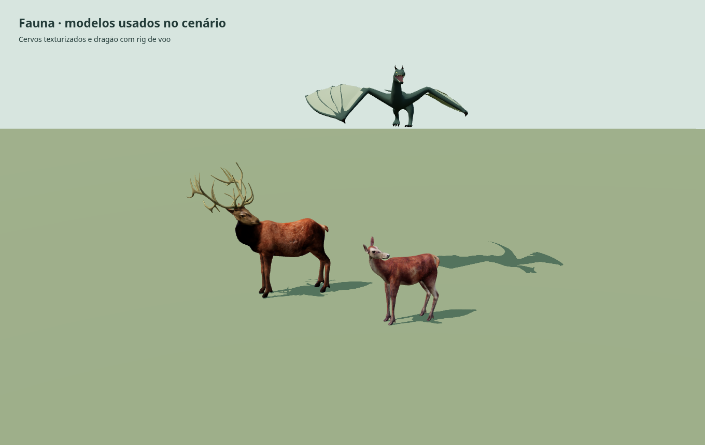

Fauna, clareiras e materiais orgânicos
Mais bandos cruzam o vale, cervos pastam em pequenos grupos e dois dragões voam em distâncias diferentes. A revisão também troca os modelos simples de vegetação por árvores, samambaias, arbustos e rochas com materiais detalhados.


AtualAnteriorCapturas reais em 1440×900. Mesa, colecionáveis, piso e câmera inicial preservados. Luz, nuvens e animais aparecem em instantes diferentes.
Abrir print completo · Abrir o site local · porta 3000
Em movimento
Captura da produção local. O vídeo permite avaliar os voos, a vegetação e as mudanças de vista.
Os modelos de fauna

Os cervos usam arquivos Blender de CDmir/TinyWorlds, com pelagem, normal maps do macho e animações de pasto e observação. O dragão é um modelo de na3ee1, refinado no Blender e animado pelo esqueleto. Esta imagem mostra os mesmos arquivos GLB do site, em iluminação de inspeção.
Base do cenário
As plantas e as rochas desta revisão vêm do Poly Haven. As árvores próximas preservam o volume e as folhas do modelo original. As distantes usam vistas individuais das copas, pré-renderizadas em oito direções, mantendo posição no terreno, oclusão, vento e neblina. Isso evita destruir a folhagem durante a otimização.
A revisão não conclui o acabamento do mundo: o relevo amplo, as margens e a arquitetura ainda precisam de mais trabalho autoral para chegar à referência. A troca de biblioteca é parte da melhoria, junto com composição, materiais e comportamento.
Mudanças, fontes, testes e desempenho · Créditos completos